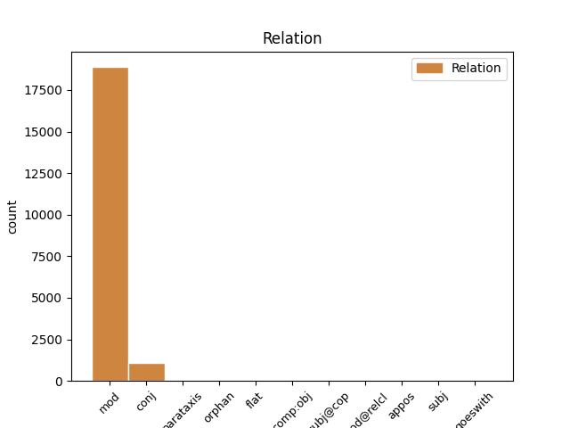
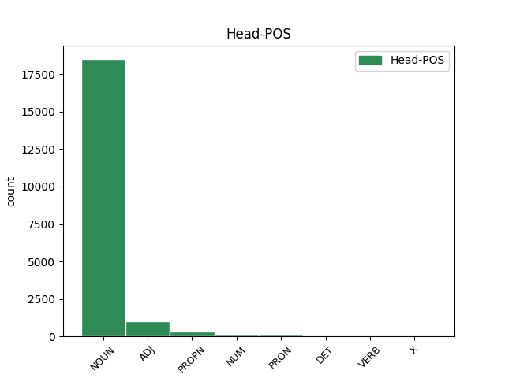
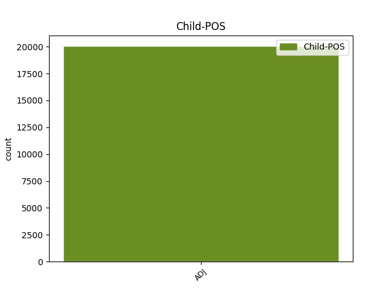

Distribution of features within this leaf



Agreement Rules sorted by frequency.
- When the dependent token is the modifer(mod) of the head token, and the dependent token is ADJ.
1 Töötud _ _ _ _ 0 _ _ _
2 riiklikku riiklik ADJ A Case=Add|Degree=Pos|Number=Sing 3 mod _ _
3 tööhõivetalitusse töö_hõive_talitus NOUN S Case=Add|Number=Sing 0 _ _ _
4 pöördumise _ _ _ _ 0 _ _ _
5 ja _ _ _ _ 0 _ _ _
6 mittepöördumise _ _ _ _ 0 _ _ _
7 järgi _ _ _ _ 0 _ _ _
8 , _ _ _ _ 0 _ _ _
9 % _ _ _ _ 0 _ _ _
10 , _ _ _ _ 0 _ _ _
11 1995-2000 _ _ _ _ 0 _ _ _
1 15-74aastased _ _ _ _ 0 _ _ _
2 mittetöötavad _ _ _ _ 0 _ _ _
3 ( _ _ _ _ 0 _ _ _
4 töötud töötu NOUN S Case=Nom|Number=Plur 0 _ _ _
5 ja _ _ _ _ 0 _ _ _
6 mitteaktiivsed mitte_aktiivne ADJ A Case=Nom|Degree=Pos|Number=Plur 4 conj _ SpaceAfter=No
7 ) _ _ _ _ 0 _ _ _
8 viimaselt _ _ _ _ 0 _ _ _
9 töökohalt _ _ _ _ 0 _ _ _
10 lahkumise _ _ _ _ 0 _ _ _
11 põhjuse _ _ _ _ 0 _ _ _
12 järgi _ _ _ _ 0 _ _ _
13 , _ _ _ _ 0 _ _ _
14 % _ _ _ _ 0 _ _ _
15 , _ _ _ _ 0 _ _ _
16 1995-2001 _ _ _ _ 0 _ _ _
1 Töötuse _ _ _ _ 0 _ _ _
2 määr määr NOUN S Case=Nom|Number=Sing 0 _ _ _
3 , _ _ _ _ 0 _ _ _
4 15-74. _ _ _ _ 0 _ _ _
5 a. _ _ _ _ 0 _ _ _
6 , _ _ _ _ 0 _ _ _
7 1989-2001 _ _ _ _ 0 _ _ _
8 , _ _ _ _ 0 _ _ _
9 % _ _ _ _ 0 _ _ _
10 ( _ _ _ _ 0 _ _ _
11 aastakeskmine aasta_keskmine ADJ A Case=Nom|Degree=Pos|Number=Sing 2 parataxis _ SpaceAfter=No
12 ) _ _ _ _ 0 _ _ _
1 Esimene _ _ _ _ 0 _ _ _
2 on _ _ _ _ 0 _ _ _
3 poliitiline _ _ _ _ 0 _ _ _
4 ehk _ _ _ _ 0 _ _ _
5 julgeolek _ _ _ _ 0 _ _ _
6 , _ _ _ _ 0 _ _ _
7 teine _ _ _ _ 0 _ _ _
8 on _ _ _ _ 0 _ _ _
9 majanduslik _ _ _ _ 0 _ _ _
10 dimensioon _ _ _ _ 0 _ _ _
11 , _ _ _ _ 0 _ _ _
12 meie _ _ _ _ 0 _ _ _
13 vabadus _ _ _ _ 0 _ _ _
14 , _ _ _ _ 0 _ _ _
15 kolmas _ _ _ _ 0 _ _ _
16 õiguslik _ _ _ _ 0 _ _ _
17 , _ _ _ _ 0 _ _ _
18 neljas neljas ADJ N Case=Nom|Number=Sing|NumForm=Letter|NumType=Ord 19 subj@cop _ _
19 sotsiaalne sotsiaalne ADJ A Case=Nom|Degree=Pos|Number=Sing 0 _ _ _
20 . _ _ _ _ 0 _ _ _
1 Toa _ _ _ _ 0 _ _ _
2 nurgas _ _ _ _ 0 _ _ _
3 kössitab _ _ _ _ 0 _ _ _
4 kulunud _ _ _ _ 0 _ _ _
5 dushinurk dushi_nurk NOUN S Case=Nom|Number=Sing 0 _ _ _
6 , _ _ _ _ 0 _ _ _
7 mis _ _ _ _ 0 _ _ _
8 higi _ _ _ _ 0 _ _ _
9 mahapesemiseks _ _ _ _ 0 _ _ _
10 igati _ _ _ _ 0 _ _ _
11 asjakohane asja_kohane ADJ A Case=Nom|Degree=Pos|Number=Sing 5 mod@relcl _ SpaceAfter=No
12 . _ _ _ _ 0 _ _ _
1 Seitsmeaastase _ _ _ _ 0 _ _ _
2 sõja _ _ _ _ 0 _ _ _
3 tõttu _ _ _ _ 0 _ _ _
4 majandusraskustesse _ _ _ _ 0 _ _ _
5 sattununa _ _ _ _ 0 _ _ _
6 lõpetas _ _ _ _ 0 _ _ _
7 Jelizaveta _ _ _ _ 0 _ _ _
8 järgne _ _ _ _ 0 _ _ _
9 isevalitseja _ _ _ _ 0 _ _ _
10 tsaar _ _ _ _ 0 _ _ _
11 Peeter Peeter PROPN S Case=Nom|Number=Sing 0 _ _ _
12 III III ADJ N Case=Nom|Number=Sing|NumForm=Roman|NumType=Ord 11 flat _ _
13 Rogerwieki _ _ _ _ 0 _ _ _
14 sõjasadama _ _ _ _ 0 _ _ _
15 ehitustööd _ _ _ _ 0 _ _ _
16 , _ _ _ _ 0 _ _ _
17 ent _ _ _ _ 0 _ _ _
18 uue _ _ _ _ 0 _ _ _
19 hoo _ _ _ _ 0 _ _ _
20 said _ _ _ _ 0 _ _ _
21 need _ _ _ _ 0 _ _ _
22 sisse _ _ _ _ 0 _ _ _
23 tema _ _ _ _ 0 _ _ _
24 naise _ _ _ _ 0 _ _ _
25 Katariina _ _ _ _ 0 _ _ _
26 II _ _ _ _ 0 _ _ _
27 valitsemisajal _ _ _ _ 0 _ _ _
28 . _ _ _ _ 0 _ _ _
1 Samamoodi _ _ _ _ 0 _ _ _
2 hakkavad _ _ _ _ 0 _ _ _
3 Eesti _ _ _ _ 0 _ _ _
4 raviasutused _ _ _ _ 0 _ _ _
5 osutama _ _ _ _ 0 _ _ _
6 kohe _ _ _ _ 0 _ _ _
7 vajaminevat _ _ _ _ 0 _ _ _
8 arstiabi _ _ _ _ 0 _ _ _
9 teisest _ _ _ _ 0 _ _ _
10 riigist _ _ _ _ 0 _ _ _
11 turistidele _ _ _ _ 0 _ _ _
12 ning _ _ _ _ 0 _ _ _
13 vajaminevat vaja_minev ADJ A Case=Par|Degree=Pos|Number=Sing|Tense=Pres|VerbForm=Part|Voice=Act 14 orphan _ _
14 arstiabi arsti_abi NOUN S Case=Par|Number=Sing 0 _ _ _
15 teisest _ _ _ _ 0 _ _ _
16 riigist _ _ _ _ 0 _ _ _
17 siin _ _ _ _ 0 _ _ _
18 viibivatele _ _ _ _ 0 _ _ _
19 pensionäridest _ _ _ _ 0 _ _ _
20 külalistele _ _ _ _ 0 _ _ _
21 . _ _ _ _ 0 _ _ _
1 Vaid _ _ _ _ 0 _ _ _
2 mõni mõni ADJ P Case=Nom|Number=Sing 0 _ _ _
3 üksik üksik ADJ A Case=Nom|Degree=Pos|Number=Sing 2 subj _ _
4 neist _ _ _ _ 0 _ _ _
5 ühendas _ _ _ _ 0 _ _ _
6 suurt _ _ _ _ 0 _ _ _
7 hulka _ _ _ _ 0 _ _ _
8 inimesi _ _ _ _ 0 _ _ _
9 , _ _ _ _ 0 _ _ _
10 enamasti _ _ _ _ 0 _ _ _
11 seisid _ _ _ _ 0 _ _ _
12 meeleavaldajaid _ _ _ _ 0 _ _ _
13 oma _ _ _ _ 0 _ _ _
14 väikese _ _ _ _ 0 _ _ _
15 huvirühma _ _ _ _ 0 _ _ _
16 eest _ _ _ _ 0 _ _ _
17 . _ _ _ _ 0 _ _ _
1 Depoo _ _ _ _ 0 _ _ _
2 tegevjuhi _ _ _ _ 0 _ _ _
3 Andrus _ _ _ _ 0 _ _ _
4 Kõre _ _ _ _ 0 _ _ _
5 sõnul _ _ _ _ 0 _ _ _
6 puudub _ _ _ _ 0 _ _ _
7 tal _ _ _ _ 0 _ _ _
8 info _ _ _ _ 0 _ _ _
9 82 82 NUM N Case=Gen|Number=Sing|NumForm=Digit|NumType=Card 0 _ _ _
10 950-kroonise 950_kroonine ADJ A Case=Gen|Degree=Pos|Number=Sing 9 goeswith _ _
11 tehingumahuga _ _ _ _ 0 _ _ _
12 originaallepingu _ _ _ _ 0 _ _ _
13 kohta _ _ _ _ 0 _ _ _
14 . _ _ _ _ 0 _ _ _
1 Selles _ _ _ _ 0 _ _ _
2 toas _ _ _ _ 0 _ _ _
3 , _ _ _ _ 0 _ _ _
4 kuhu _ _ _ _ 0 _ _ _
5 ma _ _ _ _ 0 _ _ _
6 teid _ _ _ _ 0 _ _ _
7 praegu _ _ _ _ 0 _ _ _
8 viin _ _ _ _ 0 _ _ _
9 , _ _ _ _ 0 _ _ _
10 on _ _ _ _ 0 _ _ _
11 neid tema PRON P Case=Par|Number=Plur|Person=3|PronType=Prs 0 _ _ _
12 ööbinud _ _ _ _ 0 _ _ _
13 igasuguseid _ _ _ _ 0 _ _ _
14 , _ _ _ _ 0 _ _ _
15 naisi _ _ _ _ 0 _ _ _
16 ja _ _ _ _ 0 _ _ _
17 mehi _ _ _ _ 0 _ _ _
18 , _ _ _ _ 0 _ _ _
19 pakse paks ADJ A Case=Par|Degree=Pos|Number=Plur 11 appos _ _
20 ja _ _ _ _ 0 _ _ _
21 peenikesi _ _ _ _ 0 _ _ _
22 . _ _ _ _ 0 _ _ _
Disagree Examples:
1 Hansapanga _ _ _ _ 0 _ _ _
2 suurim _ _ _ _ 0 _ _ _
3 kahtlusalune _ _ _ _ 0 _ _ _
4 tehing _ _ _ _ 0 _ _ _
5 seondub _ _ _ _ 0 _ _ _
6 Zürichis _ _ _ _ 0 _ _ _
7 asuva asuv ADJ A Case=Gen|Degree=Pos|Number=Sing|Tense=Pres|VerbForm=Part|Voice=Act 8 mod _ _
8 Cantrade Cantrade PROPN S Case=Nom|Number=Sing 0 _ _ _
9 Private _ _ _ _ 0 _ _ _
10 Bankiga _ _ _ _ 0 _ _ _
11 . _ _ _ _ 0 _ _ _
1 Esmalt _ _ _ _ 0 _ _ _
2 liikus _ _ _ _ 0 _ _ _
3 see _ _ _ _ 0 _ _ _
4 raha _ _ _ _ 0 _ _ _
5 New _ _ _ _ 0 _ _ _
6 Yorgis _ _ _ _ 0 _ _ _
7 asuvasse asuv ADJ A Case=Ill|Degree=Pos|Number=Sing|Tense=Pres|VerbForm=Part|Voice=Act 8 mod _ _
8 Bankers Bankers PROPN S Case=Nom|Number=Sing 0 _ _ _
9 Trusti _ _ _ _ 0 _ _ _
10 ja _ _ _ _ 0 _ _ _
11 sealt _ _ _ _ 0 _ _ _
12 edasi _ _ _ _ 0 _ _ _
13 Hansapanka _ _ _ _ 0 _ _ _
14 . _ _ _ _ 0 _ _ _
1 Just _ _ _ _ 0 _ _ _
2 sel _ _ _ _ 0 _ _ _
3 viisil _ _ _ _ 0 _ _ _
4 liigutas _ _ _ _ 0 _ _ _
5 musta must ADJ A Case=Gen|Degree=Pos|Number=Sing 6 mod _ _
6 raha raha NOUN S Case=Par|Number=Sing 0 _ _ _
7 Ameerika _ _ _ _ 0 _ _ _
8 suuruselt _ _ _ _ 0 _ _ _
9 teine _ _ _ _ 0 _ _ _
10 pank _ _ _ _ 0 _ _ _
11 Citibank _ _ _ _ 0 _ _ _
12 , _ _ _ _ 0 _ _ _
13 kui _ _ _ _ 0 _ _ _
14 tema _ _ _ _ 0 _ _ _
15 kaudu _ _ _ _ 0 _ _ _
16 pesi _ _ _ _ 0 _ _ _
17 narkodollareid _ _ _ _ 0 _ _ _
18 Mehhiko _ _ _ _ 0 _ _ _
19 endise _ _ _ _ 0 _ _ _
20 presidendi _ _ _ _ 0 _ _ _
21 vend _ _ _ _ 0 _ _ _
22 Raul _ _ _ _ 0 _ _ _
23 Salinas _ _ _ _ 0 _ _ _
24 de _ _ _ _ 0 _ _ _
25 Gortrari _ _ _ _ 0 _ _ _
26 . _ _ _ _ 0 _ _ _
1 Juuli _ _ _ _ 0 _ _ _
2 lõpus _ _ _ _ 0 _ _ _
3 1997 _ _ _ _ 0 _ _ _
4 kasvas _ _ _ _ 0 _ _ _
5 börsiindeks _ _ _ _ 0 _ _ _
6 talse _ _ _ _ 0 _ _ _
7 märkimisväärse märkimis_väärne ADJ A Case=Gen|Degree=Pos|Number=Sing 8 mod _ _
8 kiirusega kiirus NOUN S Case=Com|Number=Sing 0 _ _ _
9 ehk _ _ _ _ 0 _ _ _
10 raha _ _ _ _ 0 _ _ _
11 pööritamine _ _ _ _ 0 _ _ _
12 börsil _ _ _ _ 0 _ _ _
13 oli _ _ _ _ 0 _ _ _
14 eriti _ _ _ _ 0 _ _ _
15 tulus _ _ _ _ 0 _ _ _
16 . _ _ _ _ 0 _ _ _
1 Seaduse _ _ _ _ 0 _ _ _
2 kohaselt _ _ _ _ 0 _ _ _
3 on _ _ _ _ 0 _ _ _
4 rahapesu _ _ _ _ 0 _ _ _
5 " _ _ _ _ 0 _ _ _
6 kriminaalkorras _ _ _ _ 0 _ _ _
7 karistatava _ _ _ _ 0 _ _ _
8 teo _ _ _ _ 0 _ _ _
9 otsese otsene ADJ A Case=Gen|Degree=Pos|Number=Sing 10 mod _ _
10 tulemusena tulemus NOUN S Case=Ess|Number=Sing 0 _ _ _
11 saadud _ _ _ _ 0 _ _ _
12 vara _ _ _ _ 0 _ _ _
13 muundumine _ _ _ _ 0 _ _ _
14 , _ _ _ _ 0 _ _ _
15 üleandmine _ _ _ _ 0 _ _ _
16 või _ _ _ _ 0 _ _ _
17 varaga _ _ _ _ 0 _ _ _
18 õigustoimingute _ _ _ _ 0 _ _ _
19 sooritamine _ _ _ _ 0 _ _ _
20 , _ _ _ _ 0 _ _ _
21 mille _ _ _ _ 0 _ _ _
22 eesmärgiks _ _ _ _ 0 _ _ _
23 või _ _ _ _ 0 _ _ _
24 tagajärjeks _ _ _ _ 0 _ _ _
25 on _ _ _ _ 0 _ _ _
26 selle _ _ _ _ 0 _ _ _
27 vara _ _ _ _ 0 _ _ _
28 tegeliku _ _ _ _ 0 _ _ _
29 omaniku _ _ _ _ 0 _ _ _
30 ning _ _ _ _ 0 _ _ _
31 ebaseadusliku _ _ _ _ 0 _ _ _
32 päritolu _ _ _ _ 0 _ _ _
33 varjamine _ _ _ _ 0 _ _ _
34 " _ _ _ _ 0 _ _ _
35 . _ _ _ _ 0 _ _ _